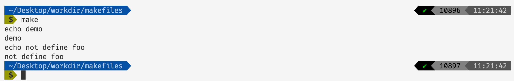
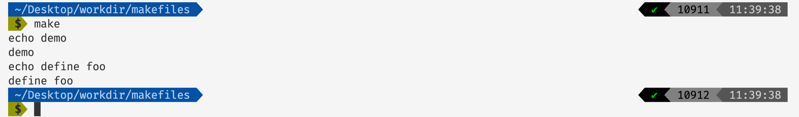
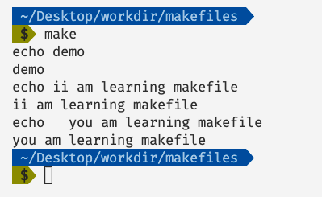
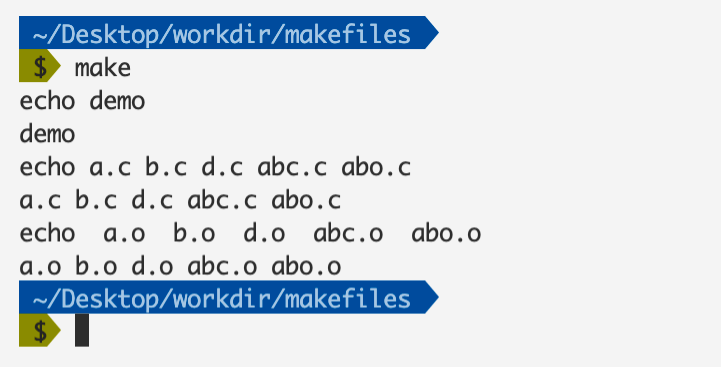
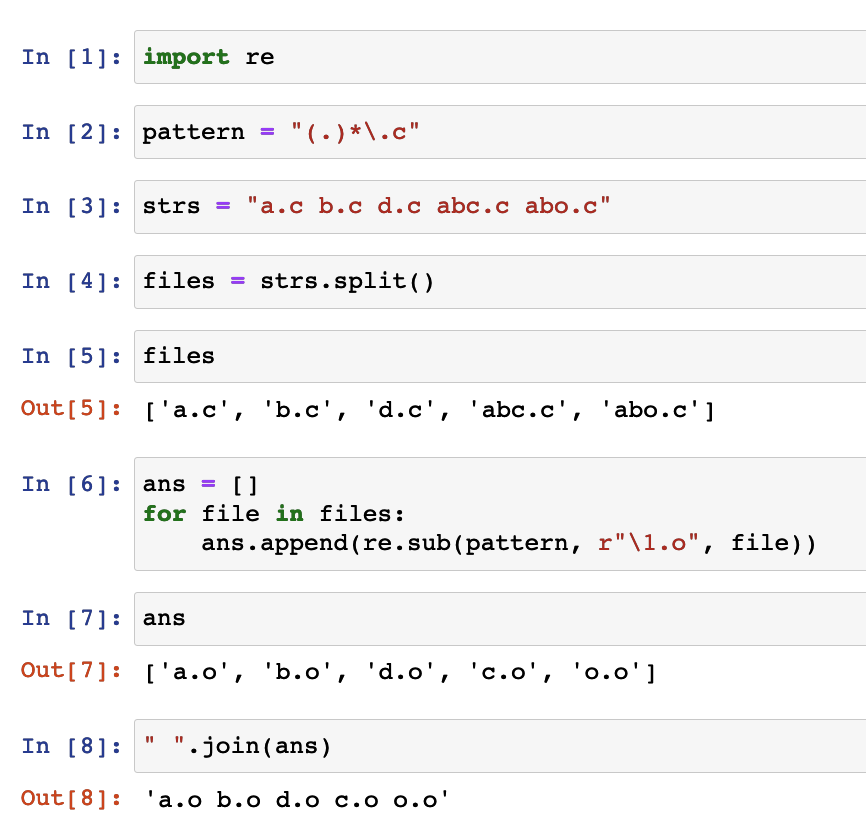
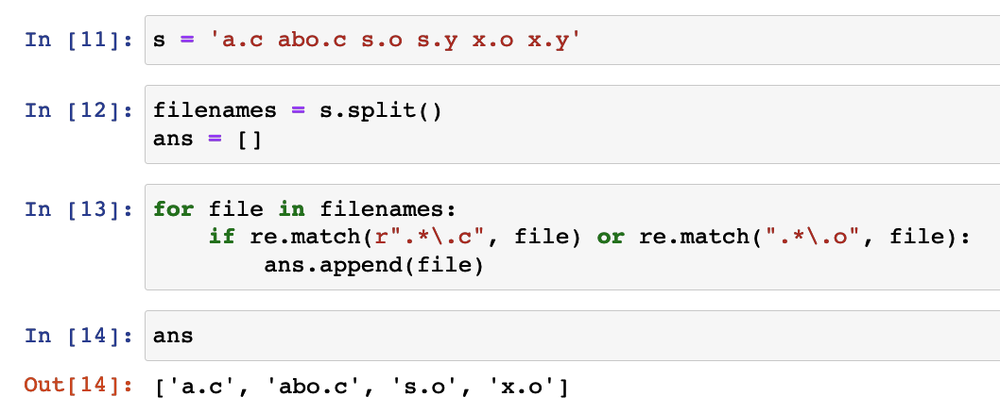
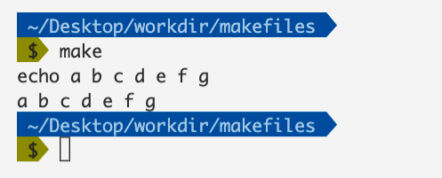
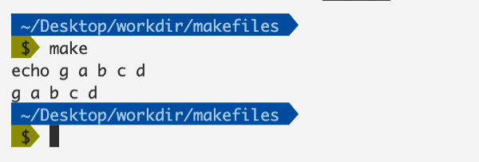
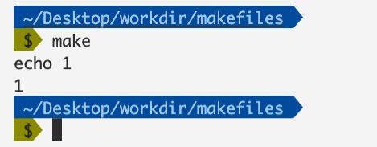

彻底掌握Makefile（二）
前言
在前面的文章彻底掌握Makefile（一）当中，我们简要的介绍了一些常见的makefile使用方法，在本篇文章当中我们将继续介绍一些makefile当中的常见用法。
Makefile中的条件判断
ifeq 和 ifneq
我们在写makefile的时候常常会有通过if语句进行判断的需求，比如说根据不同的文件设置不同的编译器等等。
cc=g++
main: demo.c
echo $(cc)
ifeq ($(cc), gcc)
echo $(cc) = 相等的语句执行了
else
echo $(cc) != 不相等的语句执行了
endif
上面的makeifle的执行结果如下：

在上面的makefile当中定义了一个变量cc，他的值为gcc。在上面的makefile当中ifeq表示如果后边的表达式成立的话，也就是$(cc)的值等于gcc那么就执行后面的语句，否则执行else后面的语句。根据上面makefile的执行结果来看，$(cc)和gcc不相等，因此和我们的期待的结果是一致的。
我们修改上面的makefile文件如下：
cc=g++
main: demo.c
echo $(cc)
ifneq ($(cc), gcc)
echo $(cc) != gcc
else
echo $(cc) = gcc
endif
执行上面的makefile文件输出的结果如下：

在上面的makefile当中ifneq的含义表示如果不相等，因为g++不等于gcc，因此这个满足条件，程序执行的结果满足条件。
关于make的输出问题，当makefile执行到echo $(cc) != gcc的时候，首先这条命令会被make输出，然后make会执行这条命令，而这条命令是输出g++ != gcc，因此才会有上面的输出。echo g++ != gcc，而执行这条命令还会输出g++ != gcc，看到这应该能够理解上面的makefile的输出结果了。
前面两个关键字的语法如下所示：
ifeq (<arg1>, <arg2>)
ifeq '<arg1>' '<arg2>'
ifeq "<arg1>" "<arg2>"
ifeq "<arg1>" '<arg2>'
ifeq '<arg1>' "<arg2>"
ifneq (<arg1>, <arg2>)
ifneq '<arg1>' '<arg2>'
ifneq "<arg1>" "<arg2>"
ifneq "<arg1>" '<arg2>'
ifneq '<arg1>' "<arg2>"
ifdef 和 ifndef
除了上面的两个关键字之外，make还给我们提供了另外两个关键字ifdef和ifndef。
ifdef和ifndef用于判断表达式是否定义过，或者是否为空：
foo = 1
main: demo.c
echo demo
ifdef foo
echo define foo
else
echo not define foo
endif
上面的makefile的输出结果如下：

在上面的makefile当中我们定义了foo，因此ifdef判断正确，输出define foo，现在修改上面的makefile如下所示说：
main: demo.c
echo demo
ifdef foo
echo define foo
else
echo not define foo
endif

在上面的makefile当中我们没有定义foo，因此在上面的makefile当中会输出not define foot。
我们在来看一个结果比较令人疑惑的makefile:
foo =
main: demo.c
echo demo
ifdef foo
echo define foo
else
echo not define foo
endif
在上面的makefile当中我们定义了foo，但是他没有值，我们看一下这个makefile的输出结果：
上面makefile的输出表示foo没有被定义，因此当我们定义一个空变量的时候和不定义的效果是一样的。
bar =
foo = $(bar)
main: demo.c
echo demo
ifdef foo
echo define foo
else
echo not define foo
endif
在上面的makefile当中我们定义了一个空的变量bar但是我们令foot=$(bar)我们看一下上面的makefile文件的输出：

可以看出是定义了foo的虽然foo的真实的值也为空，从这里也可以看出ifdef和ifndef在进行判断的时候并不会将变量直接展开，而是直接判断成不为空。
Makfile中的函数
在makefile当中除了能够使用条件表达式之外我们还可以使用函数，在makefile当中函数的使用规则如下：
$(<函数名> <函数参数>)
或者
将()替换为{}
函数的调用规则如上图所示，函数参数用,隔开。
字符串函数
subst
$(subst <from>,<to>,<text>)
- 字符串替换函数。
表示文本，这个函数会将text当中是 的字符串替换为 。
s = ii am learning makefile
ss = $(subst ii, you, $(s))
main: demo.c
echo demo
echo $(s)
echo $(ss)
上面的makefile执行结果如下图所示：

从上面的结果我们可以看出，确实将字符串s当中的ii替换成了you!
patsubst
$(patsubst <pattern>,<replacement>,<text>)
- pattern 表示第一个参数，用于表示如何对 text 进行匹配。
- replacement 表示第二个参数 表示如何对匹配的字符进行重写。
- patsubst在进行匹配替换的时候，会先将字符串text根据空格或者tab键或者回车换行符进行分割，然后一一的进行替换和匹配。
这个函数也是一个字符串替换函数，但是与上面的函数不同的是这是一个模式替换。我们直接根据例子来进行分析：
s = a.c b.c d.c abc.c abo.c
ss = $(patsubst %.c, %.o, $(s))
main: demo.c
echo demo
echo $(s)
echo $(ss)
执行make命令上面的makefile的输出结果如下图所示：

从上面的结果我们可以看出，patsubst函数将所有的.c文件的后缀都变成了.o。
在上面的makefile当中首先会将$(s)当中的字符串按照回车换行、空格以及tab键将$(s)当中的进行分割，然后一个一个进行patsubst操作，然后将得到结果合并起来。
在上面的patsubst函数当中%符号是一个通配符，他匹配了.c前面的所有符号。
- 在pattern当中的符号为"%.c"，这个表示用%匹配了.c前面的所有的字符。
- 在replacement当中的字符串为"%.o"，这个%用于表示在pattern当中匹配到的字符串，比如对于abo.c来说%就代表了abo，因此被替换的字符串就是abo.o。
你如果你对Python有所了解的话，那么上面的替换代码等价的Python代码如下所示：

Strip
$(strip <string>)
- 主要功能去掉字符串 string 首尾的空格。
findstring
$(findstring <find>,<text>)
- 这个函数的作用是从字符串
当中寻找字符串 ，如果找到了字符串 就返回字符串 ，否则返回空。
filter
$(filter <pattern...>,<text>)
这是一个过滤函数，这个函数执行时，首先会根据空格或者tab键或者回车换行符进行分割，然后一一的进行filter函数的操作。然后遍历每一个被分割出来的字符，如果不满足pattern的规则的话对应的字符就会被过滤掉。
s = a.c abo.c s.o s.y x.o x.y
ss = $(filter %.c %.o, $(s))
main: demo.c
echo $(ss)
上面的makefile执行之后输出的结果如下图所示：
可以看过滤掉了不是以.c和.o结尾的文件。
上面的过滤函数对应的Python代码如下所示：

filter-out
这个函数和filter的用法是一样的只不过，作用刚好相反，filter是保存符合条件的字符串，filter-out是保存不符合条件的字符串。
s = a.c abo.c s.o s.y x.o x.y
ss = $(filter-out %.c %.o, $(s))
main: demo.c
echo $(ss)
sort
这个函数主要是用于帮助字符串排序的，同时还会取出分割之后相同的字符串。
s = g a b c d e f a a a a
ss = $(sort $(s))
main: demo.c
echo $(ss)
以上的makefile输出结果如下图所示：

从上面的输出结果我们可以验证sort不仅可以给字符串排序还会去除相同的字符串。
word
$(word <n>,<text>)
这个功能很简单，返回
s = g a b c d e f a a a a
ss = $(word 1, $(s)) # 取出第一个字符
main: demo.c
echo $(ss)
wordlist
$(wordlist <start>,<end>,<text>)
这个也是从字符串当中取出字符，是取出第
s = g a b c d e f a a a a
ss = $(wordlist 1, 5, $(s))
main: demo.c
echo $(ss)

words
统计单词的个数。
s = 1 2 3 4 5
ss = $(words $(s))
main: demo.c
echo $(ss)
firstword
这个函数主要是用于返回第一个字符串的。
s = 1 2 3 4 5
ss = $(firstword $(s))
main: demo.c
echo $(ss)

在本篇文章当中主要给大家介绍了Makefile当中一些常用的函数和条件语句的使用，整体比较简单，大家可以对照着makefile和结果自己实现一遍，下期我们将在makefile当中的一些其他的函数！
以上就是本篇文章的所有内容了，我是LeHung，我们下期再见！！！更多精彩内容合集可访问项目：https://github.com/Chang-LeHung/CSCore
关注公众号：一无是处的研究僧，了解更多计算机（Java、Python、计算机系统基础、算法与数据结构）知识。